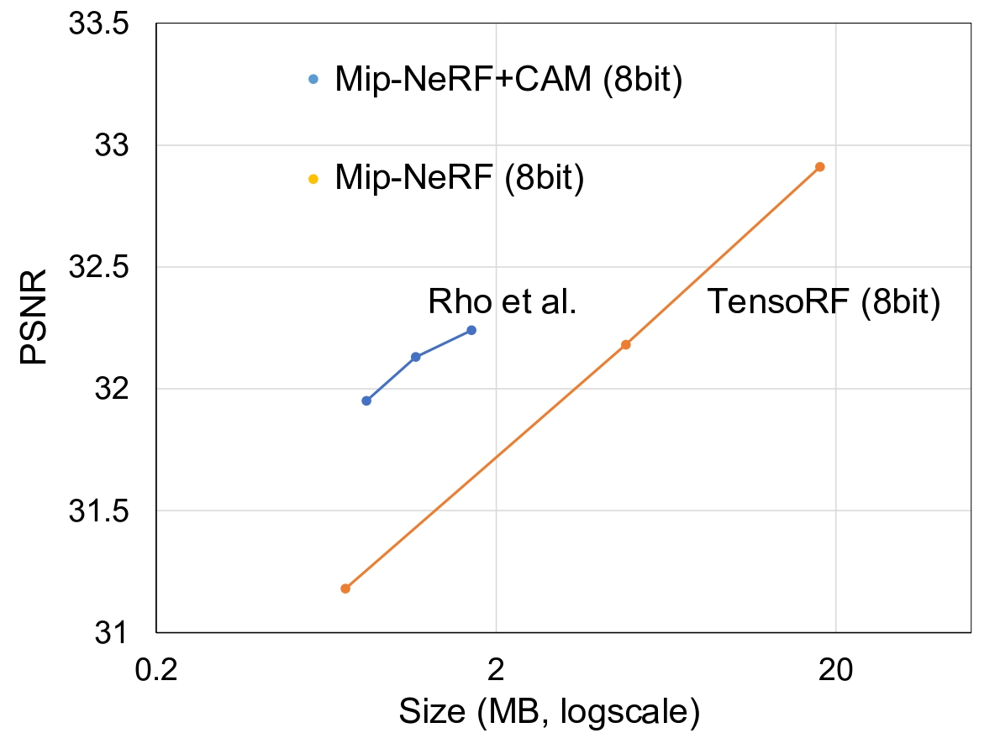
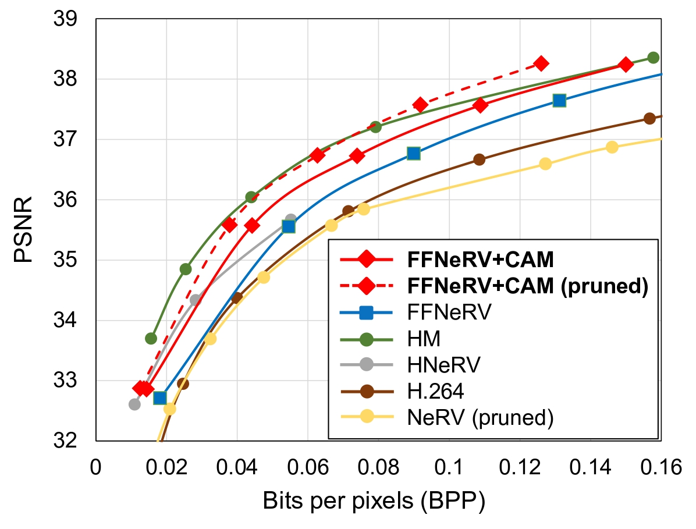

Coordinate-Aware Modulation for Neural Fields
ICLR 2024 (Spotlight)
1Sungkyunkwan University, 2KT
Abstract
Neural fields, mapping low-dimensional input coordinates to corresponding signals, have shown promising results in representing various signals. Numerous methodologies have been proposed, and techniques employing MLPs and grid representations have achieved substantial success. MLPs allow compact and high expressibility, yet often suffer from spectral bias and slow convergence speed. On the other hand, methods using grids are free from spectral bias and achieve fast training speed, however, at the expense of high spatial complexity. In this work, we propose a novel way for exploiting both MLPs and grid representations in neural fields. Unlike the prevalent methods that combine them sequentially (extract features from the grids first and feed them to the MLP), we inject spectral bias-free grid representations into the intermediate features in the MLP. More specifically, we suggest a Coordinate-Aware Modulation (CAM), which modulates the intermediate features using scale and shift parameters extracted from the grid representations. This can maintain the strengths of MLPs while mitigating any remaining potential biases, facilitating the rapid learning of high-frequency components. In addition, we empirically found that the feature normalizations, which have not been successful in neural filed literature, proved to be effective when applied in conjunction with the proposed CAM. Experimental results demonstrate that CAM enhances the performance of neural representation and improves learning stability across a range of signals. Especially in the novel view synthesis task, we achieved state-of-the-art performance with the least number of parameters and fast training speed for dynamic scenes and the best performance under 1MB memory for static scenes. CAM also outperforms the best-performing video compression methods using neural fields by a large margin.
On Spectral Bias
Results
Image Regression and Generalization
| Method |
#Params |
Regression |
Generalization |
| Natural |
Text |
Natural |
Text |
| I-NGP |
237K |
32.98 |
41.94 |
26.11 |
32.37 |
| FFN |
263K |
30.30 |
34.44 |
27.48 |
30.04 |
| + CAM |
266K |
32.21 (+1.91) |
50.17 (+15.73) |
28.19 (+0.71) |
33.09 (+3.05) |
Novel View Synthesis
| Bit |
Method |
NeRF Synthetic |
NSVF Synthetic |
LLFF |
| Size |
PSNR |
Size |
PSNR |
Size |
PSNR |
| 32 |
NeRF |
5.00 |
31.01 |
5.00 |
30.81 |
5.00 |
26.50 |
| TensoRF |
71.9 |
33.14 |
~70 |
36.52 |
179.7 |
26.73 |
| Mip-NeRF |
2.34 |
33.09 |
2.34 |
35.83 |
2.34 |
26.86 |
| + CAM |
2.34 |
33.42 |
2.34 |
36.56 |
2.34 |
27.17 |
| 8 |
Rho et al. |
1.69 |
32.24 |
1.88 |
35.11 |
7.49 |
26.64 |
| TensoRF |
16.9 |
32.78 |
17.8 |
36.11 |
44.7 |
26.66 |
| Mip-NeRF |
0.58 |
32.86 |
0.58 |
35.52 |
0.58 |
26.64 |
| + CAM |
0.58 |
33.27 |
0.58 |
36.30 |
0.58 |
26.88 |
Dynamic NeRF
| Method |
#Params |
PSNR |
| D-NeRF |
1.1M |
29.67 |
| TiNeuVox |
12M |
32.67 |
| K-planes |
37M |
31.61 |
| NerfAcc |
0.6M |
32.22 |
| + CAM |
0.6M |
33.78 |
NeRF Compression

Video Compression

Analysis
Bibtex